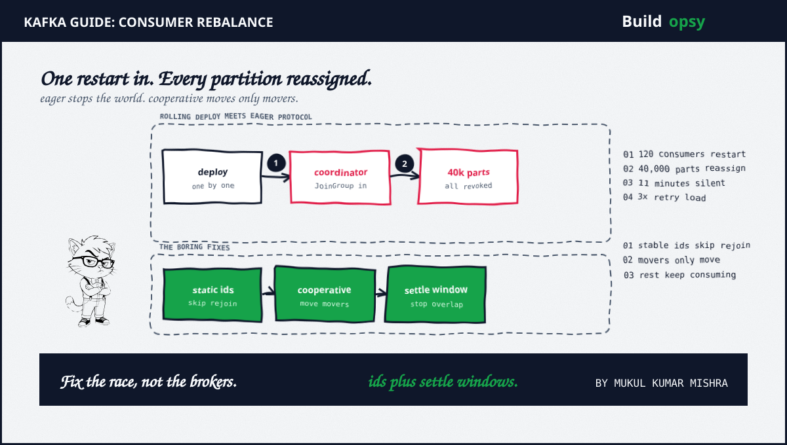

1. What a Kafka Rebalance Is in 60 Seconds
A consumer group assigns each partition to a member. Under the classic protocol, membership, subscription, or relevant topic-metadata changes can require a new assignment; JoinGroup carries member information to the coordinator. With the classic eager protocol, members revoke all current assignments before receiving the new assignment, pausing group-wide record processing. Cooperative rebalancing changes the handoff: only partitions that must move are revoked, potentially over more than one rebalance round.
The companion scenario uses 120 members and 40,000 partitions. Their average share is 40,000 ÷ 120 ≈ 333 partitions per member. That is a distribution average, not a complexity estimate or a prediction of rebalance duration. Assignment time depends on client version, assignor, cluster state and application work.
2. Why Rolling Deploys Cascade
A membership change can require a new assignment. The companion model assumes a 660 s group pause; it does not derive that duration from the 40,000-partition count or from an unstated restart cadence. For the cascade mechanism to hold, the next membership change must arrive before the current classic-eager rebalance finishes. That overlap is a modeled condition, not a Kafka timing guarantee.
Consumer timeouts can create a second trigger. If a member misses max.poll.interval.ms, Kafka can treat it as failed; with static membership, reassignment is delayed until its session timeout. When a group resumes, members may fetch accumulated records at once. The exact catch-up load depends on arrival rate, retention, fetch settings and application throughput, so the companion scenario labels those inputs separately.
3. Backlog and Retry Arithmetic Are Separate
The companion scenario assumes producers continue at 60,000 events/s through a 660 s pause. Its backlog estimate is 60,000 × 660 = 39,600,000 events, assuming consumers make no progress during that window. This is modeled backlog, not Kafka incident telemetry.
Retry attempts are a separate input. If each affected logical call gets two immediate retries, the number of attempts is 1 + 2 = 3 per call. That is a 3× attempt multiplier for those calls, not 6× total load on the brokers or every service. Backoff, jitter, retry caps and idempotency change the recovery profile. Price your own policy with the retry-storm calculator using measured arrival rates; the full scenario arithmetic is in the modeled cascade teardown.
4. Eager Versus Cooperative Rebalancing
The modeled failure path uses the classic eager rebalance protocol. Apache Kafka's KIP-429 adds cooperative incremental revocation: partitions that keep the same owner can remain assigned, while moved partitions are revoked before a later round assigns them. That can keep unaffected partitions consuming, but an assignment that moves many partitions still needs work and follow-up rounds.
Static membership (KIP-345) uses a stable group.instance.id so a brief restart can return as the same member before its session expires; it can avoid a rebalance for that temporary absence. It does not make longer outages or membership changes rebalance-free. Kafka 4.0+ also offers the KIP-848 consumer protocol, which is GA but must be enabled with group.protocol=consumer; in Kafka 4.2, classic remains the default.
| Approach | What changes | Effect |
|---|---|---|
| Static membership | Stable instance ID plus suitable session timeout | May avoid removal during transient unavailability |
| Cooperative assignor | Incremental revocation | Partitions that stay with their owner may remain assigned |
| Group-aware deploys | Settle windows plus caps | Triggers stop overlapping |
| Budgeted retries | Backoff plus jitter plus caps | Recovery stays near 1x |
5. What to Measure and Set
Alert on rebalance duration, not only lag. Track rebalance latency, failed rebalance rate, generations per hour and assignment size. Make deploys group-aware. Wait for a stable generation, stagger restarts and cap concurrent restarts. Budget retries like capacity. Use backoff, jitter, per-dependency caps and circuit breakers that open while lag is extreme. Revisit protocol defaults as partitions grow. Measure your client, assignor and state-restore work; partition count alone does not predict pause duration.
6. The Verdict: Boring Is the Fix
Nothing here is novel. That is the point. Stable instance IDs, incremental revocation, settle windows, backoff with jitter and protocol-level alerts are ordinary controls. In the modeled cascade, overlapping membership changes keep restarting group coordination; the inputs do not establish that a particular customer outage occurred. Review these controls on the same schedule as capacity.
The pattern travels past Kafka. Every system has a coordination cost that grows with membership, a rollout strategy that ignores it plus a retry policy priced at calm-weather load. Find yours before Tuesday does.
7. Frequently Asked Questions
What triggers a Kafka consumer rebalance?
Under the classic group protocol, membership, subscription or relevant topic-metadata changes can require a new assignment. JoinGroup carries member information; it is not a universal trigger rule for every protocol.
What is the difference between eager and cooperative rebalancing?
Under the classic eager protocol, every member revokes its currently owned partitions before participating in a rebalance. A cooperative assignor can retain partitions that stay with their current owner and transfer revoked partitions in a later rebalance round.
How does static membership prevent rebalance storms?
A stable group.instance.id lets Kafka recognize a briefly restarted member. If it returns before its session expires, Kafka can avoid removing and re-adding it. If the session expires, reassignment can still occur.
Why do rolling deploys pause Kafka consumers?
With the classic eager protocol, a membership change can start a group rebalance and members revoke assignments before receiving new ones. If restart triggers arrive before earlier rebalances finish, a group-wide pause can persist. Cooperative and the newer consumer protocol use different assignment behavior.
Sources and Method
Protocol details come from Apache Kafka documentation and KIPs. The scenario model is explained in the companion teardown.
- Apache Kafka 4.2 consumer configuration: group.protocol, static membership, max.poll.interval.ms and assignors
- Apache Kafka 4.2 consumer rebalance protocol: classic and KIP-848 consumer groups
- Apache Kafka 4.2 API: eager and cooperative revocation semantics
- Apache Kafka 4.2 API: CooperativeStickyAssignor requirements
- KIP-429: Kafka Consumer Incremental Rebalance Protocol
- KIP-345: Static membership protocol to reduce consumer rebalances
- KIP-848: The Next Generation of the Consumer Rebalance Protocol